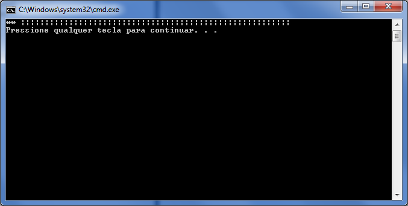
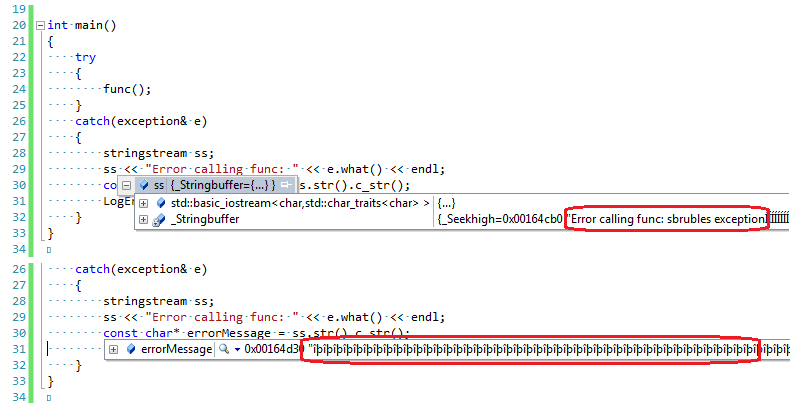
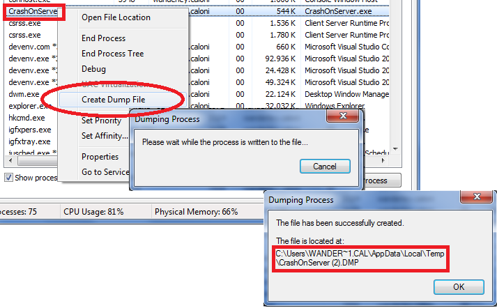

# E foi-se o TDC
Caloni, 2011-07-07 [up] [copy]Dessa vez, talvez pelo dia de semana, havia poucos participantes. Isso, contudo, não evitou que o conteúdo e a qualidade das palestras fosse, como sempre, de alto nível.
Infelizmente, só cheguei a partir da palestra de Antonio Ribeiro sobre uma Simulação Distribuída focando no trânsito de São Paulo. Há tempos esse é um tema debatido e ainda acredito que a tecnologia ainda vai resolver isso da melhor maneira possível: cada um em sua casa.
Depois do agradável almoço, onde tive a oportunidade de rever DQSoft e conversar sobre leituras de ficção-não-necessariamente-científica, participamos de um pequeno review sobre escrita de código seguro. Ao menos não tivemos que ouvir novamente algum representante da Microsoft falando sobre a famigerada lib que refazia as funções do C para a versão com copyrights.
Então chega a vez da palestra mais bagunçada: a minha. Juro que perdi totalmente o fio da meada no início, e quanto mais me esforçava para lembrar o que devia ser dito, mais esquecia. Então resolvi partir direto para o hands-on, onde consegui, imagino eu, com um ritmo adequado, demonstrar todo o cenário da análise do Dicionário Houaiss que tinha feito anos atrás. E pelo visto, muitas pessoas gostaram, pois fui abordado por três ou quatro participantes muito simpáticos e entusiasmados com o tema. Talvez seja hora de voltar para esse submundo mais um pouquinho, fazer coisas mais hardcore pra variar...
Depois do coffee-açucarado-break, tivemos a palestra mais interessante do dia: desenvolvimento de microkernels, apresentado por Rodrigo Almeida, professor de Eletrônica e Programação de Embarcados da Unifei. Não só o tema me interessou ao máximo, como a didática da apresentação foi impecável, abordando tanto os pontos for-dummies quanto um gostinho do que seria fazer por nós mesmos um controle intermediário entre a placa e os programas.
Ao final, nosso mestre-de-cerimônias habitual Alberto Techberto Fabiano fez a abertura de um painel tentando mesclar problemas + experiência + vontade de aprender. Dos assuntos que me lembro, chamou a atenção o fato dos profissionais da linguagem (C/C++) estarem escasseando cada vez mais e também o fato de nosso Grupo C/C++ parecer praticamente invisível aos olhos do Google, pois parece que quase ninguém consegue encontrar o dito cujo.
Infelizmente, alguns compromissos inadiáveis me fizeram ter que sair pela esquerda e esquecer o Lado B da questão. Felizmente, esse não é o nosso último encontro, e espero participar de futuras oportunidades de me integrar à nossa agora, como diz meu amigo Pikachu, comunidade maçônica.
# Cuidado com variáveis temporárias
Caloni, 2011-07-26 <computer> [up] [copy]Um dos problemas que a linguagem C++ possui para seus iniciantes é o de não deixar muito explícito partes do seu comportamento, principalmente as partes que lidam com ponteiros/referências e o jogo da vida dos objetos. Às vezes a coisa fica de tal como complexa que fica até difícil explicar o porquê das coisas.
Por exemplo, vejamos o singelo caso de alguém que precisa formatar uma saída de erro e para isso escolheu um stringstream:
#include <sstream>
#include <exception>
#include <iostream>
using namespace std;
void LogError(const char* msg)
{
cerr << "** " << msg << endl;
}
void func()
{
//doSomething();
throw exception("sbrubles exception");
}
int main()
{
try
{
func();
}
catch(exception& e)
{
stringstream ss;
ss << "Error calling func: " << e.what() << endl;
const char* errorMessage = ss.str().c_str();
LogError(errorMessage);
}
}
Quando chamamos func, ele lança uma exceção que é capturada no main que, por sua vez, formata uma stream e obtém sua string (através do método str) e através dessa string obtém o ponteiro da string em C puro (através do método c_str). Porém, a mensagem resultante na saída-padrão de erro não era o esperado:
Depurando diretamente, vemos que a stream, de fato, contém o que esperávamos. O único elemento errante é justamente o ponteiro obtido através da chamada dupla de métodos.
O porquê isso ocorre só fica óbvio quando vemos a ajuda (ou a assinatura) da função str da classe stringstream:
Get/set the associated string object The first version returns a copy of the string object currently associated with the string stream buffer.
Ora, a função str retorna uma **cópia** do objeto string usado internamento pelo buffer de nossa string stream. Duas coisas ocorrem em qualquer cópia de um objeto retornada por uma função:
* A cópia do objeto original e seu desacoplamento (óbvio).
* A construção de um objeto baseado no original e que, após o fim da expressão onde foi chamado o método, **é destruído**.
Uma vez que a chamada a str termina, é entregue uma instância de uma string que contém a string original que está sendo usada pela string stream para a expressão da chamada, que geralmente vem seguida de uma cópia:
// // 1. str retorna uma cópia; // 2. atribuição copia retorno para buf. // string buf = ss.str();
A variável buf no exemplo acima será, portanto, a terceira string usada aqui até então. Ao final da expressão, a string intermediária retornada por str é automaticamente destruída, por se trata de uma cópia temporária para obedecer a sintaxe de retorno da função.
Agora, o que acontece se, **na cópia temporária**, é feita uma operação para obter seu ponteiro interno usado para armazenar sua string estilo C?
Obviamente ele fica inválido após o fim da expressão!
Vamos ver em câmera lenta:

Nada como assembly fresquinho para refrescar os conceitos de C++ por baixo dos panos.
Update
Após uma enxurrada de programadores gerenciáveis perguntarem qual seria, então, a solução ideal, segue o snipet mais explicitado:
// 1. Copie a string retornada para uma variável não-temporária string buf = message.str(); // 2. Use essa string dentro de seu escopo válido (até o final do catch, no exemplo do artigo). const char* text = buf.c_str();
Update 2
Outro leitor sugeriu fazer toda a chamada em uma única instrução, economizando em expressividade e ainda evitando a destruição da variável temporária criada ao chamar str.
// 1. Matar três coelhos com uma instrução só. LogError(ss.str().c_str());
Particularmente, gosto de instruções simples que me permitam ver claramente o que está acontecendo de forma simples pelo depurador (até porque sei que o compilador irá otimizar tudo no final em versão Release, ainda mais se estiver quebrado em instruções simples). Porém, toda solução que evita o uso da variável temporária após a execução do método str é válida.
# Depuração de emergência
Caloni, 2011-07-26 <computer> [up] [copy]O programa está rodando no servidor do cliente, que é acessível por sessão remota do Windows, mas de repente ele capota. Existem aí duas possibilidades fora o debug remoto (que, nesse caso, não é possível):
1. Analisar um dump gerado.
2. Depurar localmente o problema.

Analisar um dump gerado
Para a primeira opção, basta abrir o Gerenciador de Tarefas, localizar o processo e gerar o dump através do menu de contexto.
Com o dump e o Windbg em mãos, basta analisá-lo. Porém, se o seu processo é 32 bits e o servidor é 64 bits (geralmente é), o dump gerado será de 64 bits, EMBORA seja de um process 32. Ou seja, ao abri-lo, o sistema vai mostrar as threads de manipulação do SO para sistemas 32 (todos com o nosso amigo wow64cpu).
Microsoft (R) Windows Debugger Version 6.12.0002.633 AMD64 Copyright (c) Microsoft Corporation. All rights reserved. Loading Dump File [C:\Tests\CrashOnServer.DMP] User Mini Dump File with Full Memory: Only application data is available Executable search path is: Windows 7 Version 7600 MP (2 procs) Free x64 Product: WinNt, suite: SingleUserTS Machine Name: Debug session time: Tue Jul 26 09:26:23.000 2011 (UTC - 3:00) System Uptime: 0 days 0:35:47.425 Process Uptime: 0 days 0:00:42.000 ...........WARNING: MSVCR100D overlaps MSVCP100D *** ERROR: Symbol file could not be found. Defaulted to export symbols for ntdll.dll - *** ERROR: Symbol file could not be found. Defaulted to export symbols for wow64cpu.dll - wow64cpu!TurboDispatchJumpAddressEnd+0x690: 00000000`745d2dd9 c3 ret 0:000> kv Child-SP RetAddr : Args to Child : Call Site 00000000`001ce6c8 00000000`745d282c : : wow64cpu!TurboDispatchJumpAddressEnd+0x690 *** ERROR: Symbol file could not be found. Defaulted to export symbols for wow64.dll - 00000000`001ce6d0 00000000`7464d07e : : wow64cpu!TurboDispatchJumpAddressEnd+0xe3 00000000`001ce790 00000000`7464c549 : : wow64!Wow64SystemServiceEx+0x1ce 00000000`001ce7e0 00000000`76deae27 : : wow64!Wow64LdrpInitialize+0x429 00000000`001ced30 00000000`76de72f8 : : ntdll!LdrGetKnownDllSectionHandle+0x1a7 00000000`001cf230 00000000`76dd2ace : : ntdll!RtlInitCodePageTable+0xe8 00000000`001cf2a0 00000000`00000000 : : ntdll!LdrInitializeThunk+0xe Para entrar dentro do Inception, é necessário usar a extensão wow64exts e usar o comando ".effmach x86". 0:000> .load wow64exts 0:000> .effmach x86 Effective machine: x86 compatible (x86) 0:000:x86> kv ChildEBP RetAddr Args to Child .. 0035ec98 0035ecac 0035ecfc 0035ecac 0035ecfc ntdll_76f80000!KiUserExceptionDispatcher+0xf (FPO: [2,0,0]) *** WARNING: Unable to verify checksum for CrashOnServer.exe WARNING: Frame IP not in any known module. Following frames may be wrong. 0035f0bc 01181ca9 0035f198 0035f19c 00000000 0x35ecac 0035f190 01181b7d 009d80a0 5fb4d717 00000000 CrashOnServer!Log::LogError+0x29 0035fb08 01186f1f 00000001 009d1410 009d1c68 CrashOnServer!main+0x12d 0035fb58 01186d4f 0035fb6c 76543677 7efde000 CrashOnServer!__tmainCRTStartup+0x1bf 0035fb60 76543677 7efde000 0035fbac 76fb9f02 CrashOnServer!mainCRTStartup+0xf 0035fb6c 76fb9f02 7efde000 771dc110 00000000 kernel32!BaseThreadInitThunk+0xe 0035fbac 76fb9ed5 01181316 7efde000 00000000 ntdll_76f80000!__RtlUserThreadStart+0x70 0035fbc4 00000000 01181316 7efde000 00000000 ntdll_76f80000!_RtlUserThreadStart+0x1b
Após esse último passo, siga para o último passo desse tutorial. Ou escolha a segunda opção:
Depurar localmente o problema
Para depurar localmente, supondo que seja um executável simples, você precisa dos seguintes itens:
* Pasta do WinDbg copiado (a Debugging Tools instalada pelo SDK, ou sua pastinha particular guardada no PenDrive).
* Símbolos dos binários envolvidos (em sincronia com os binários que iremos analisar).
* Fontes da compilação dos binários (a versão exata seria ideal; grave o revno do controle de fonte pra facilitar).
Os fontes, no caso de uma conexão por Terminal Server, podem ser disponibilizados através do mapeamento de drives entre as máquinas. Os símbolos, no entanto, por serem usados extensivamente pelo WinDbg, é recomendável que estejam locais na máquina depurada, pois do contrário você terá que tomar uma quantidade excessiva de cafés para executar meia-dúzia de instruções.
Supondo que temos tudo isso, só precisamos executar alguns passos básicos para o setup:
1. Abrir o WinDbg e escolher File, Open Executable. Escolha o executável e pare por aí.

2. Na tela de comando do WinDbg (View, Command, ou Alt + 1) execute os comandos abaixo:
.symfix .sympath+ .reload .srcpath .reload /f CrashOnServer.exe
3. Ao executar lm, o módulo cujo símbolo foi carregado deve conter o nome do pdb logo à frente.
0:000> .symfix c:\tools\symbols 0:000> .sympath+ C:\Projetos\Caloni\Posts\Debug Symbol search path is: srv*;C:\Projetos\Caloni\Posts\Debug Expanded Symbol search path is: SRV*c:\tools\symbols*http://msdl.microsoft.com/download/symbols;c:\projetos\caloni\posts\debug 0:000> .reload Reloading current modules ...... 0:000> .srcpath C:\Projetos\Caloni\Posts Source search path is: C:\Projetos\Caloni\Posts 0:000> .reload /f CrashOnServer.exe *** WARNING: Unable to verify checksum for CrashOnServer.exe 0:000> lm start end module name 00000000`01170000 00000000`01193000 CrashOnServer C (private pdb symbols) C:\Projetos\Caloni\Posts\Debug\CrashOnServer.pdb 00000000`745d0000 00000000`745d8000 wow64cpu (deferred) 00000000`745e0000 00000000`7463c000 wow64win (deferred) 00000000`74640000 00000000`7467f000 wow64 (deferred) 00000000`76da0000 00000000`76f4c000 ntdll (pdb symbols) c:\tools\symbols\ntdll.pdb\\ntdll.pdb 00000000`76f80000 00000000`77100000 ntdll32 (deferred)
4. Feito isso, está tudo OK. Podemos colocar breakpoints, monitorar variáveis, verificar stacks, etc.
Por último, execute o seguinte comando na tela de comandos do WinDbg:
.hh
E boa sorte =)
[2011-06] [2011-09]